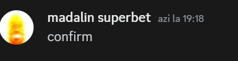

Enciclopedie
SMP-uri

SMP-urile Grupului
De-a-lungul timpului, datând din 2020, au existat nenumărate SMP-uri (en; Survival Multiplayer | ro; Bresle) realizate de membrii Orange.
Au existat SMP-uri cu o durată mare și unele cu o durată mică de joacă.
SMP-urile Oficiale
Acestea sunt SMP-urile create în totalitate de membrii grupului.
SMP-ul din Februarie 2021
Nu se știe cu exactitate durata SMP-ului acestuia, precum și numele său, se presupune că era denumit DambovitaSMP, dar probabil ca nu.
Fondatori: edx, muslec
Data creării: 01.02.2021 ~01:00
Data închiderii: 10.02.2021 / 20.02.2021
Membri: 6 (edx, Muslec, edibos, david, Silviu, oncioiu)
Durată de viață: 1-2 săptămâni
SMP-ul din februarie 2021 a fost un SMP realizat de către edx și Muslec (membru fost-grup dâmbovița).
Prima datare a grupului a fost pe 01.02.2021 la 1 dimineața.
SMP-ul a fost făcut pe versiunea 1.16, iar pe parcursul a câteva zile, următorii membri notabili s-au alăturat: oncioiu (membru fost-grup micro 2 târgovșite și dâmbovița), Silviu (membru fost-grup dâmbovița), edibos și David.
SMP-ul se presupune că a durat doar 1-2 săptămâni și a fost realizat pe fost-server dâmbovița.
GherțoaiaSMP Sezonul I | Februarie 2022
Fondatori: edx, edibos
Data creării: 14.02.2022 ~13:00
Data închiderii: 09.03.2022
Membrii: 6 (edx, edibos, david, oncioiu, buba, furniculonci)
Durată de viață: 25z
GherțoaiaSMP (nume precedent: DambovitaSMP) a fost un SMP creat de către edx, edibos și oncioiu. A fost creat pe data de 14.02.2022 (ora exactă nu se știe, se presupune că a fost 1 după-amiaza).
Acest server a fost ultimul server care a fost hostat pe gratis, deoarece erau întâmpinate o căruță de probleme de LAG pe server.
Serverul a fost co-hostat de către edx și edibos (nu se știe dacă david a ajutat la host), unde edx a donat 15 lei iar edibos 10 lei.
Membri serverului au fost: edx (butt3rdll), edibos (27atmos), David (PepegaPizza), oncioiu (Raulooooo), Buba (pumndefier) și furniculonci.
Toată conversația serverului a fost înregistrată și arhivată, se poate găsi aici.
SMP-ul s-a încheiat pe data de 09.03.2022, având o durată de viață de 25 de zile.
Andra și Juanii
Când membrul g59andra a intrat pe server, membrii edibos și edx au decis să o păcălească, punând oi numite Juan pe la ea la fermă și in mina ei, toată bazaconia aceasta a durat câteva minute, până când a dat vina pe membrul David, care el nu făcuse nimic săracul.
Buba și Palatul
În timpul serverului, membrul Buba deținea o casă, moderat estetic în fundul curții. Membri edibos și edx decid să-i bubuie casa lui buba, rezultând în edibos primind karma iar membrul buba ne mai intrând pe server.
Drept răsplată, membri edibos, edx și David au construit o clădire țigănească, intitulată „Palat”.
Oncioiu și interdicțiile
Membri serverului au realizat diverse și diferite construcții emancipate, precum construcții avantajoase pentru membri serverului, deoarece deschideau poarta resurselor greu de făcut rost, numite atipic „ferme”.
Totuși, membrul Oncioiu a primit nenumărate interziceri (interdicții) la fermele realizate de diverșii membri, pe motive necunoscute.
GherțoaiaSMP Sezonul II | Iulie 2022
Fondatori: edx, edibos, David ,
Data creării: 15.07.2022 ~02:00
Data închiderii: 16.08.2022 ~18:00
Membrii: 6 (edx, edibos, david, TeraCotaYT, cristianno200)
Durată de viață: 1l 1z
GherțoaiaSMP Sezonul 2 (pe scurt; GSMP) este SMP-ul adaos SMP-ului antecedent, creat pe data de 15.07.2022 în jurul orei 2 dimineața.
Serverul a fost co-creat de către edx, edibos și David.
Membrii serverului au fost edx, edibos, David, TeraCotaYT și cristianno200.
Serverul s-a încheiat pe data de 16.08.2024 la ora 6 după-amiaza, având o durată de viață de 1 lună și 1 zi. Acest server a avut cea mai mare durată de viață dintre toate.
Regulile alterate ale serverului
Asemena sezonului I, ambele servere aveau reguli pentru a păstra good sportsmanship între jucători. În seoznul 2, aceleași reguli au fost păstrate asemena sezonului 1, dar din pricina faptului că membrul edibos a fost omorât de membrul edx deoarece bătea câmpii legat de sabia pe care o deținea edx, edibos s-a supărat și a zis că nu mai joacă și că nu-și dă experiența și obiectele pierdute înapoi deoarece „încălca regulile serverului”.
Astfel, regulile au fost alterate de membrul edx, pentru a permite darea înapoi de obiecte și experiență înapoi în cazul omorului cauzat de alt jucător.
GherțoaiaSMP Sezonul III | Decembrie 2022
Fondatori: edx, edibos, David ,
Data creării: 15.07.2022 ~02:00
Data închiderii: 16.08.2022 ~18:00
Membrii: 6 (edx, edibos, david, TeraCotaYT, cristianno200)
Durată de viață: 1l 1z
GherțoaiaSMP Sezonul 3 este ce-l de-al treilea sezon din seria de SMP-uri „GherțoaiaSMP”, creat pe data de 10.12.2022 în jurul orei 4 după-amaiaza
Serverul a fost co-creat de către edx și edibos.
Sezonul 3 a văzut cei mai mulți membri dintre toate SMP-urile, cu un record de 11 jucători unici. Membrii serverului au fost: edx, edibos, David,Wh1pZY, Casian03, cata182, cristianno200, Puff, buba, Galaxy și coOs.
Serverul s-a încheiat pe data de 03.01.2023 la ora 7 dimineața, având cea mai scurtă durată de viață (timp în care s-a jucat) de doar aproximativ 2 săptămâni.
Nu a existat nimic notabil.
SMP-uri neoficiale
SMP-urile neoficiale sunt SMP-uri create de diverși membri ai breslei, sau care nu făceau parte din breaslă, dar care nu viza jucarea en grand (adică cu toată lumea). Aceste SMP-uri au fost de-obicei servere de scurtă durată.
SMP-ul Cosmote(confirmat) din vara 2020.
Nu există suficiente detalii în legătură cu acest SMP precum datarea sa, precum și încheierea sa, membrii ș.a.m.d.

SMP-ul realizat de grupul de discord Cosmote în vara 2020, a fost un SMP care a durat pe o porțiune a verii.
Din server, au făcut parte membrii actuali ai breslei edx, edibos și David.
Construcții notabile.
-
„Aeroportul” a fost o casă clădită de membra andra care semăna cu un aeroport și de-obicei era folosit ca arenă de lupte.
-
Aleea pulilor este o construcție lost-media realizată de membrul edx. Este o cavernă realizată la suprafață din netherrack cu pule de netherack înauntru, care ducea la portalul de Nether.
-
Biblioteca subterană a fost un proiect neterminat, condus de edx și edibos care avea în plan construcția unei biblioteci gigantice subterane. A existat și un sătean (author note: nu mă refer la David) cărui nume nu se mai știe.
-
Arena de luptă din nether creată de edx era, cum se deduce din nume, o arenă de luptă realizată în nether, unde ocazional se mai făcea 1v1 între jucători, câștigând prin împingerea celuilalt în lavă. Arena avea găuri și high-ground-uri pentru intensitate.
CafelutsaSMP | Decembrie 2022
CSMP a fost un SMP creat de edx, edibos și David pe o versiune învechită de Minecraft (1.2.4 se presupune) care a durat decât o săptămână.
Nu a avut nimic notabil.